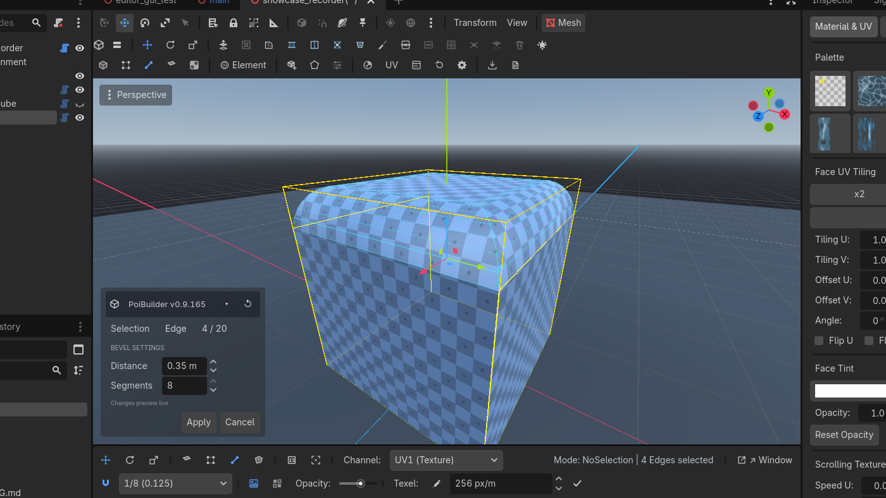

Bevel
Chamfer or fillet selected edges or faces. Distance and segments live in a modal. The new band stays selected.
Toolbar  Bevel
Bevel


 Row 1 · Mesh Operations
Row 1 · Mesh Operations BevelCtrl + BChamfers or fillets selected edges (or face perimeters) with a live distance/segments modal.Needs: Edge or face selection. Key Ctrl+B.
BevelCtrl + BChamfers or fillets selected edges (or face perimeters) with a live distance/segments modal.Needs: Edge or face selection. Key Ctrl+B.
Bevel
Ctrl + B
Chamfer or fillet selected edges or face perimeters into smooth rounded bands.
✓ Edge or face selection
Row 1

When
Round a tabletop, chamfer a stone block, fillet a pipe intersection, knock the corner off a doorway so light catches it.
Steps
- Edge mode: select the edges (Alt+click a loop around a box). Or face mode: bevel the outline of the faces.
- Click Bevel. The overlay modal opens with distance and segments.
- Drag distance. Raise segments above 1 for a rounded fillet.
- Apply. Clicking elsewhere also applies (bevel is the exception to the create-modal rule). Selection change cancels.
The op keeps selection on the new band, so you can bevel again or assign a material immediately.
Face vs edge
- Edge bevel walks the selected edges, inserts the chamfer/fillet strip, rebuilds the adjacent faces.
- Face bevel treats the face boundary as the edge set.
- Corners with more than two selected edges grow a rounded dome when segments > 1.
Distance is clamped deterministically if the mesh cannot fit it — the overlay reports the limit. The op does not secretly retry at half distance.
Bevel rewrites topology. Edit Params on the original primitive dies, same as after extrude. Undo is a whole-mesh snapshot.